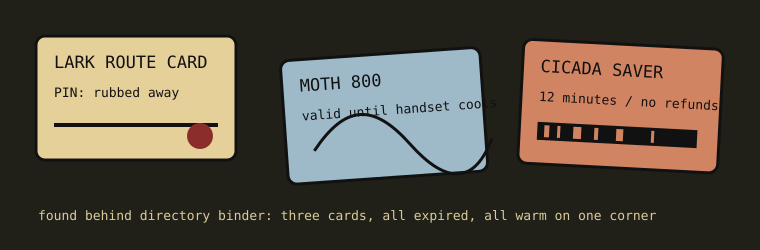

Calling cards made long distance feel portable, but the plastic still had rules: scratch panels, toll-free access numbers, issuer promises, and tiny warnings about fraud in all caps.

| catalog no. | surface | front copy | wear evidence |
|---|---|---|---|
| PC-01 | cream laminate | LARK ROUTE CARD | upper right corner softened; probably kept with bus pass. |
| PC-02 | blue stock | MOTH 800 | center bowing from heat; card smells faintly like a glove compartment. |
| PC-03 | orange plastic | CICADA SAVER | barcode scratched by keys, not by concealment. twelve-minute plan. |
The cards are not magic keys. They are receipts with ambition: proof that a call could belong to a person instead of the booth they stood in.